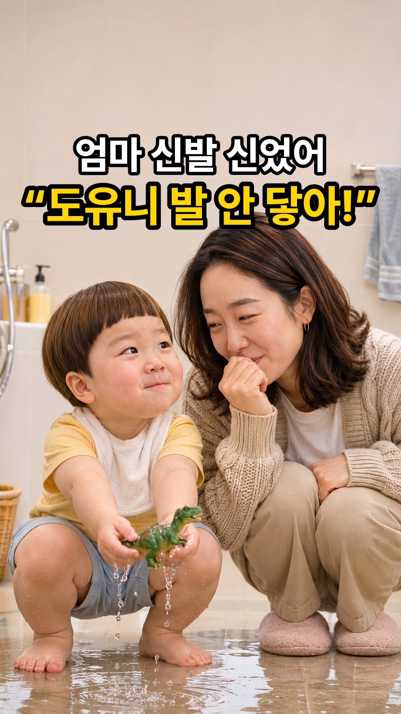
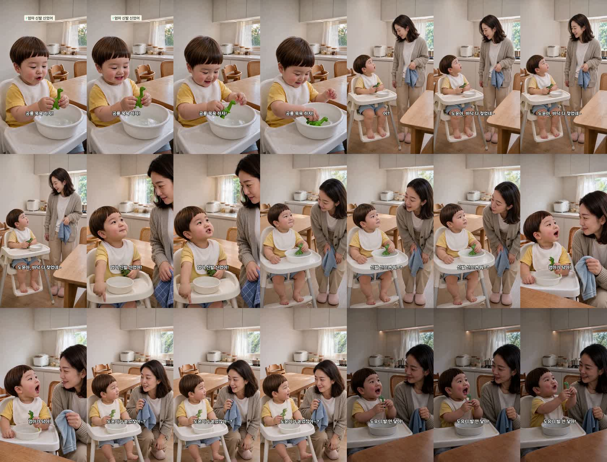
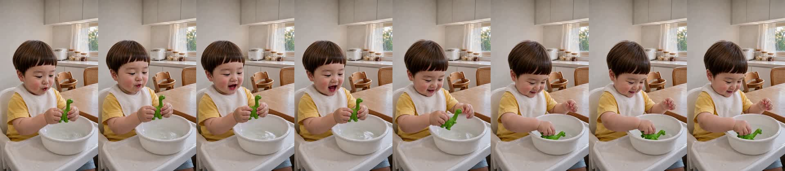
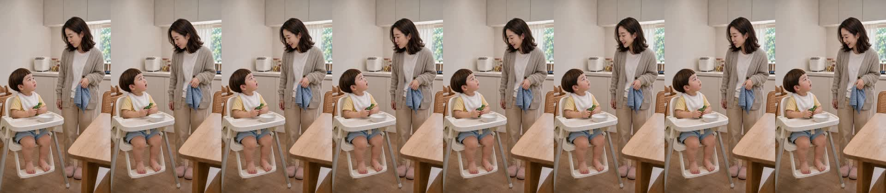
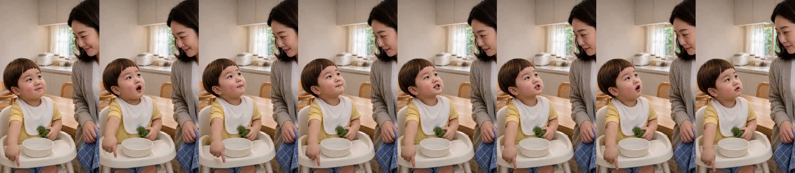
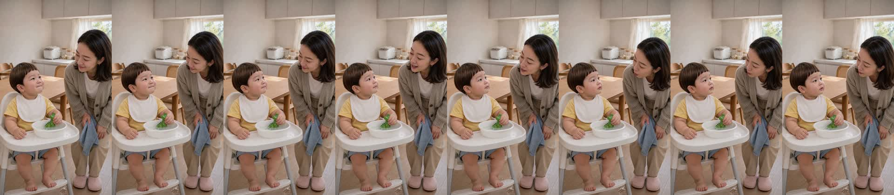
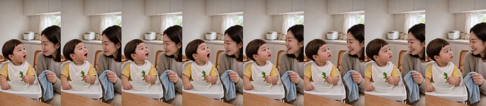
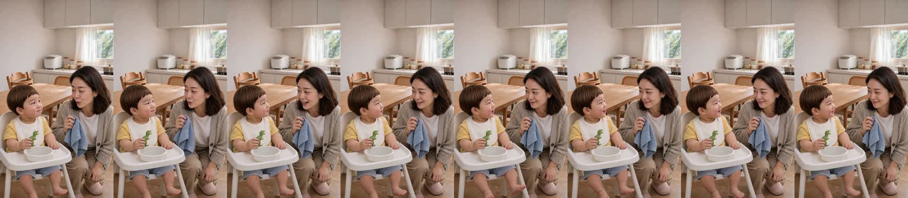
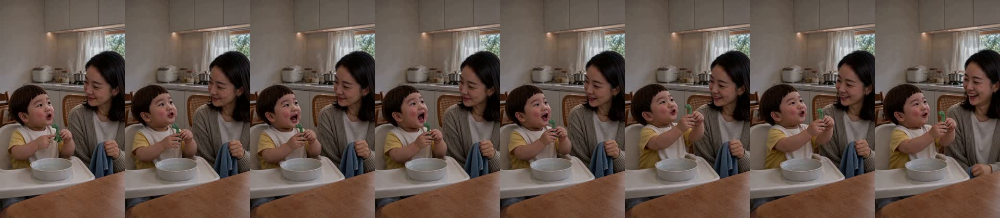

| C01 | 도윤 [후킹]: “공룡 목욕 하자!” 식탁 아기의자 쟁반 위 물그릇에서 초록 고무 공룡을 두 손으로 첨벙첨벙 씻기는 도윤 (Close chest-up, 3/4 앵글) |
|---|---|
| C02 | 엄마: “어? 도윤아, 바닥 다 젖었네~” 파란 행주를 들고 아기의자 옆에 서서 젖은 바닥과 도윤이를 다정하게 바라보는 엄마 |
| C03 | 도윤: “엄마 신발 신었어!” 오른손 검지로 아래쪽 엄마 분홍 실내화를 콕 가리키며 당당하게 엄마를 올려다보는 도윤 (Close chest-up, 3/4 앵글) |
| C04 | 엄마: “응? 신발 신으면 뭐~?” 웃음을 참으며 고개를 살짝 갸웃하고 도윤이에게 되묻는 엄마 |
| C05 | 도윤: “엄마가 닦아!” 신발 신은 사람이 닦는 거라며 확신에 찬 얼굴로 고개를 끄덕이는 도윤 (Close chest-up, 3/4 앵글) |
| C06 | 엄마: “도윤이가 쏟았잖아~?” 행주 든 손을 살짝 들며 어이없지만 귀여워서 웃음이 새는 엄마 |
| C07 | 도윤 [펀치라인]: “도유니 발 안 닿아! 공룡도!” 손에 든 초록 공룡의 작은 발을 가리키며 공룡을 번쩍 들어 올리고 해맑게 빠지는 도윤과 웃음을 터뜨리는 엄마 (Close chest-up, 3/4 앵글) |







